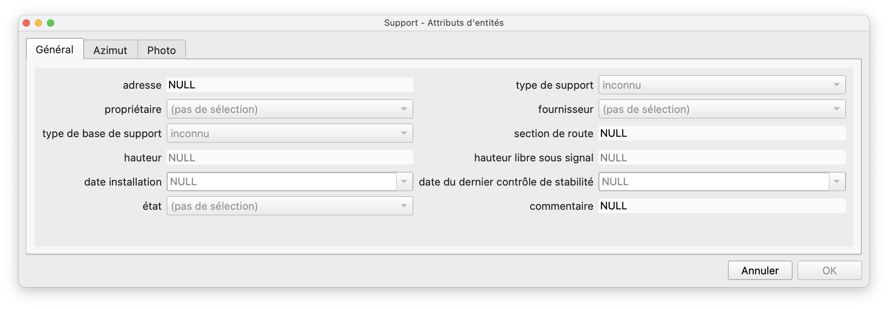
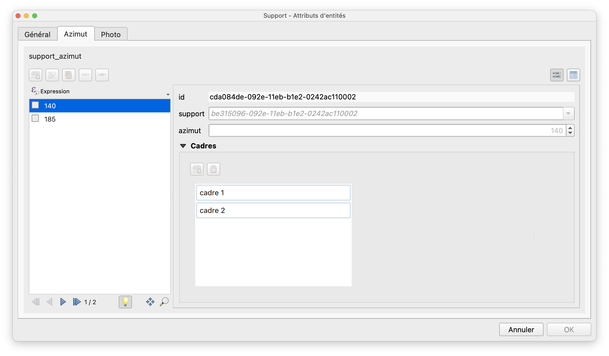

Editieren
Hinzufügen von Signalen
- Die Ebene "Pfosten" in den Editiermodus schalten und einen Punkt digitalisieren um das Formular zu öffnen.
Das Formular besteht aus drei Reitern:



Im Reiter “Azimut” können die Rahmen und Signale erfasst werden. Das Attribut Azimut kann auch visuell, dank der Ansicht vw_azimut_edit des Schemas signalo_app erfasst werden.


Grösse der Schilder
Die Grösse der Schilder kann in den Projekteigenschaften im Reiter Variablen angepasst werden, indem die Variable signalo_img_size verändert wird.

Versatz der Schilder
Bei Pfosten mit vielen Signalen kann die Sichtbarkeit der Signale auf der Karte mit den Attributen offset_x und offset_y aus der Tabelle azimut verbessert werden (Attribute x-Versatz und y-Versatz des Layers Azimut in QGIS).
Spezialschilder
Richtungsschilder
Das Datenmodell ermöglicht eine feine Steuerung der Richtungsschilder. Drei Attribute definieren die Anzeige dieser Schilder:
- In der Tabelle
vl_official_sign(Ebene Offizielle Signale im QGIS-Projekt) definiert das boolesche Attributdirectional_sign, ob ein Signal ein Richtungssignal ist oder nicht. - In der Tabelle
framekann mit dem Attributanchorder Ankerpunkt des Rahmens festgelegt werden: Links, Zentriert oder Rechts (Ebene Rahmen mit dem Attribut Ankerpunkt im QGIS-Projekt). - In der Tabelle
signkann mit dem booleschen Attributnatural_direction_or_leftdie natürliche Richtung des Schilds in Bezug auf seinen Ankerpunkt, der auf Rahmenebene definiert ist, geändert werden. Standardmässig (das Kontrollkästchen ist aktiviert) ist die Richtung des Schilds entgegengesetzt zu seinem Ankerpunkt. Das heißt, wenn der Ankerpunkt rechts ist, zeigt das Panel nach links und umgekehrt. Dieser Automatismus kann umgangen werden, indem das Kontrollkästchen natürliche oder linke Richtung deaktiviert wird.
Doppelseitiges Schild
Auf Signalebene (Tabelle sign, Ebene Signal in QGIS) wird mit dem Attribut hanging_mode oder Art der Aufhängung festgelegt, ob ein Schild auf beiden Seiten das gleiche Signal trägt.
- Vorne -> das Signal wird nur auf der Vorderseite angezeigt
- Beidseitig -> das Signal wird auf beiden Seiten des Schilds angezeigt
-
Hinten -> das Signal wird nur auf der Rückseite des Schilds angezeigt. Dieser Wert kann z.B. gewählt werden, wenn Vorder- und Rückseite des Schilds nicht identisch sind.
-
Hinweis: Die Ebene Rahmen enthält auch ein Attribut, das sich auf die Doppelseitigkeit bezieht (Kontrollkästchen Doppelseitige Montage). Der Wert dieses Attributs ist jedoch nur informativ und hat keinen Einfluss auf die Darstellung des Schildes auf der Karte.*
Benutzerdefinierte Schilder
Es kommt vor, dass eine bestimmte Zusammensetzung von Signalen auf einem Schild in der Auswahl der offiziellen Signale nicht vorhanden ist. Die Tabelle vl_user_sign (Ebene Benutzerdefinierte Signale in QGIS) ermöglicht die Erstellung benutzerdefinierter Signale. Diese Tabelle enthält die gleichen Attribute wie vl_official_sign, die Liste der offiziellen Signale. Mindestens die folgenden Attribute müssen ausgefüllt werden:
id- eindeutiger Identifikator, der in der Dropdown-Liste in QGIS verwendet wirdactive- auf true setzen, sonst erscheint das Signal nicht in der Dropdown-Liste in QGISvalue_de, odervalue_deodervalue_it, abhängig von der Benutzersprache - dieser Name wird auch in der Dropdown-Liste in QGIS erscheinenimg_deoderimg_deoderimg_it, je nach der Sprache des Benutzers. Dieses Attribut muss den genauen Namen der.svg-Datei des benutzerdefinierten Signals enthaltenimg_heightundimg_width- zwei Werte, die die Höhe und die Breite des.svg-Bildes enthalten
Mit den folgenden Attributen können ausserdem benutzerdefinierte Richtungsschilder erstellt und verwaltet werden:
directional_sign- auf true setzen, wenn es sich um ein richtungsweisendes Schild handeltimg_fr_right,img_de_right,img_it_right,img_ro_right, die den Namen der.svg-Datei mit Rechtsrichtung enthalten, z. B. composite-r.svg. Die Attributeimg_de,img_deusw. enthalten dann den Namen der Datei.svgmit Linksrichtung, z. B. composite-l.svg.
Um auf die Dropdown-Liste der benutzerdefinierten Signale in QGIS zugreifen zu können, muss der Signaltyp Benutzerdefiniert ausgewählt werden.

Die Erstellung der entsprechenden .svg liegt also in der Verantwortung des Nutzers. Die Bilddatei muss in beiden Ordnern gespeichert werden
- project > images > user-defined > original: Dies ist das nicht-dynamische Bild, das auch im Attributformular angezeigt wird.
- project > images > user-defined > editable: Dies ist das dynamische Bild, das die Anzeige von Aufschriften ermöglicht.
Es empfiehlt sich, eines der offiziellen Bilder als Beispiel und Grundlage für die Erstellung eines personalisierten Signals zu nehmen, um ein Gefühl für die Grösse zu bekommen und um zu verstehen, wie man dynamische Aufschriften einrichtet.

Arbeitsumgebungen
Sie haben die Möglichkeit, mehrere Arbeitsumgebungen zu haben: Test, Produktion, … Für jede Version sind Projektdateien verfügbar:
| Projektdatei | Name des PG Service | Anwendungsbeispiel |
|---|---|---|
signalo.qgs |
pg_signalo |
Demo |
signalo_prod.qgs |
pg_signalo_prod |
Produktion |
signalo_dev.qgs |
pg_signalo_dev |
Test und Entwicklung |
Sprachen
Es wurde ein System zur Übersetzung des QGIS-Projekts eingerichtet. Die Übersetzungsdateien signalo_XX.qm müssen sich im Ordner des QGIS-Projekts befinden. Das Projekt signalo.qgs wird dann in der Sprache des QGIS-Benutzerprofils geöffnet. Zurzeit gibt es das Projekt in Französisch (master-Sprache) und Deutsch (mit der Übersetzungsdatei signalo_de.qm). Wenn die Sprache der Software Deutsch ist, wird dann beim Öffnen des Projekts signalo.qgs automatisch eine Projektdatei signalo_de.qgs erstellt.
Filterung und Analyse der Gesamtkohärenz
Diese Funktionalität sollte in den folgenden Versionen noch verbessert werden.
Es ist möglich, die Anzeige der Schilder via die Ebene "Ansicht Filter" zu filtern. Mit einem Rechtsklick auf die Ebene, "Filter…" im Menü auswählen. Dann muss eine Abfrage erstellt werden, um die Elemente zu filtern.
{kind=link}